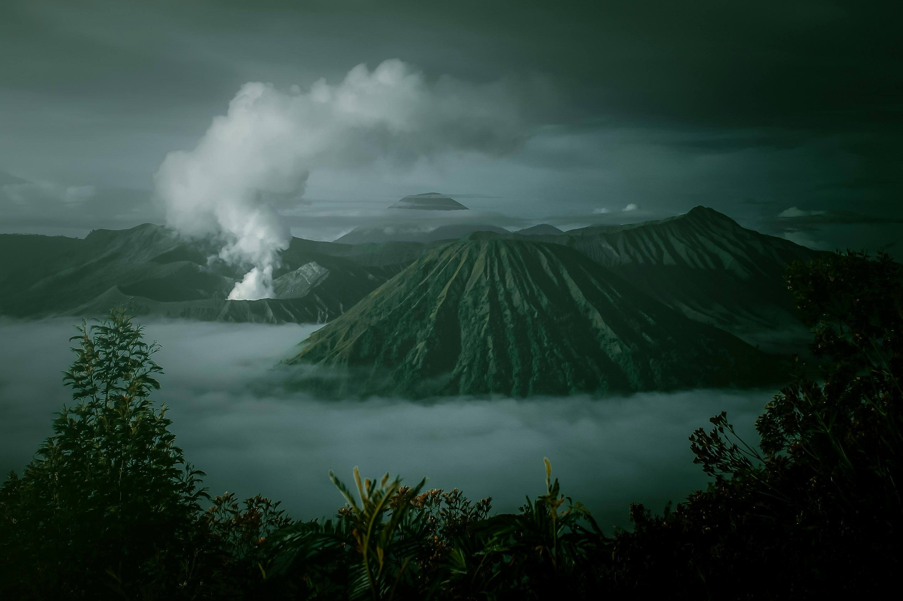

Gunung Bromo
Hard
Probolinggo, Jawa Timur, Indonesia
Jarak
8.9 km
Ketinggian
680 m
Tipe Rute
Out & Back
Mendaki Gunung Bromo adalah pengalaman yang menarik dan penuh tantangan. Perjalanan dimulai dengan melintasi lautan pasir yang luas, menciptakan suasana khas pegunungan. Ketika mendekati kawah, Anda akan merasakan aroma belerang dan melihat kawah aktif yang mengeluarkan asap. Pendakian ke puncak menawarkan pemandangan spektakuler, terutama saat matahari terbit. Langit berwarna-warni akan menyambut Anda, sementara Gunung Bromo, Gunung Batok, dan Gunung Semeru menciptakan panorama yang menakjubkan.